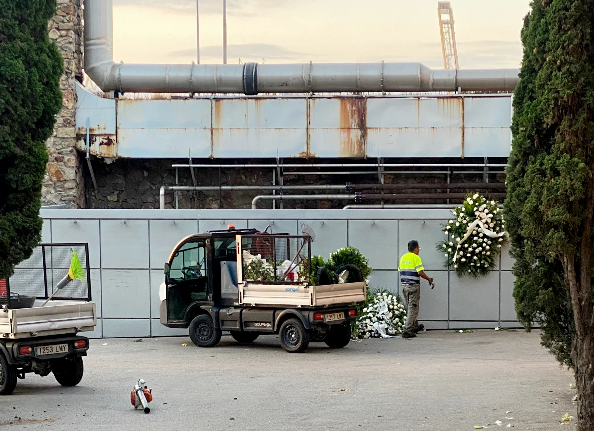

Espectro.
Del lat. spectrum.
1. fantasma (imagen de una persona muerta).
Sin.: fantasma, espíritu, aparición, aparecido, sombra, ánima, visión, espanto, duende.
2. Distribución de la intensidad de una radiación en función de una magnitud característica, como la longitud de onda, la energía o la temperatura.
Sin.: banda, dispersión, gama, serie, escala.
Muestrario de tintes naturales a partir de los pétalos de rosas rojas, recuperadas de los residuos florales del crematorio de Montjuic. La investigación se centra en analizar el espectro cromático resultante de distintos procesos de extracción de pigmentos y de la proliferación bacteriana. Las transformaciones del color en los tintes se convierten en testimonios materiales de una mutación: lo que se muere y deviene en otra cosa.